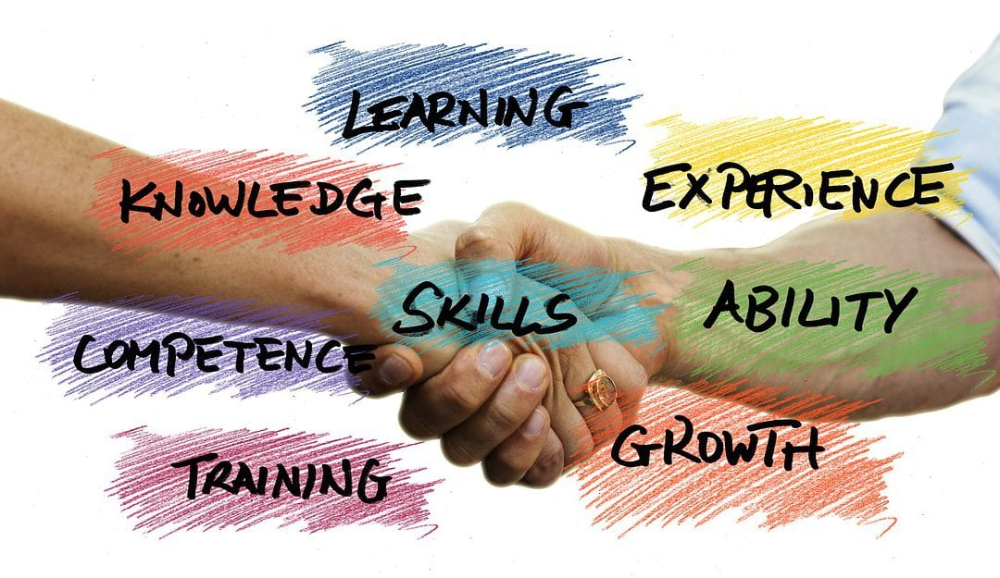
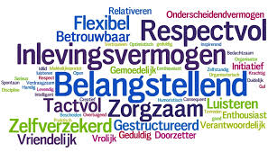

Competentie
Naar mate de vorderingen in de minor Smart Industry zijn er meerdere competenties ontwikkeld,hieronder staan deze compenties beschreven per onderdeel. Het gaat hierbij over de ervaring bij de competenties en hoe ik zelf naar kijk na het einde van dit semester.
1. Herkennen / Analyseren / Diagnosticeren
Bij het bedrijfsbezoek bij ELK kwam vooral dit onderwerp ten bod, Ali Hajou maakte met duidelijke voorbeelden uit was Agile en Scrum was. Het is hierbij namelijk heel belangrijk om goed te kunnen voorspellen . We speelden een spel waarbij elke groep moest inschatten wat ze in een bepaalde tijd konden bereiken. Je kon op het begin zien dat elk persoon uiteindelijk toch moeite hadden met het inschatten. Naarmate de tijd kon ik goed merken dat ik er steeds beter werd in het herkennen van de hoeveelheid werk en daardoor goed kon inschatten hoeveel tijd je in totaal nodig had.
Ook bij het bedrijfsbezoek van ELK zag je dat ze veel bezig waren met het herkennen, analyseren en diagnosticeren van de hoeveelheid werk en tijd nodig was om het einddoel te bereiken. Dit was daardoor in mijn opzicht een interessant en leerzame dag omdat je dit goed mee kan nemen in de toekomst.
In week 2,2020, kregen we ook nog een gastles over blockchain. Ik had hiervoor wel eens over gehoord met mijn lessen maar het werd in de gastles een stuk duidelijker wat er ook werkelijk mee bedoeld werd.
2. Innoveren / Ontwerpen
Dit heb ik op meerdere plekken opgepakt. Namelijk bij het project wat we hebben gedaan bij Blueberry Innovaters en bij het maken van mijn eigen website. Met mijn website begon ik met niks en ging je steeds meer het ontwerp aanpassen. Je gaat je opmaak verbeteren en uitbreiden en ook dat het er steeds professioneler uit komt te zien. Voor het project zijn wij druk bezig geweest om door middel van machine learning een manier te maken voor het herkennen van de onkruiden tussen de blauwe bessen struiken waar de telers last van hebben. Op dit moment is er nog niet iets vergelijkbaar op de markt bij de telers dus is een geheel nieuw concept wat ook zeer interessant voor de andere markten kan zijn.
Bij de lessen zelf heb ik geleerd door middel van EAGLE een PCB te ontwerpen. We begonnen is met een groot moederbord en vele componenten en kregen de opdracht dit zelf te verwerken naar een PCB. Ik vond dit heel interessant om te doen want ook dit was compleet nieuwe voor mij en vind het ook leuk dat iedereen zijn eigen PCB moest maken en je ook daadwerkelijk je product in werkelijkheid kreeg te zien.
Nadat de PCB was gemaakt kreeg iedereen de opdracht om een box te maken waarin de PCB en andere componenten in geplaats konden worden. Dit moest je zelf ontwerpen via Solidworks. Ik had hier nog enige ervaring mee omdat ik in het eerste jaar van mijn opleiding (HAN Automotive) ook met cad tekenen heb gewerkt. Hierdoor ging het ontwerpen van mijn box redelijk makkelijk.

3. Projectmanagement
Project management kwam vooral terug in het project bij Blueberry Innovaters . In onze groep hadden we niet echt precies één teamleider maar was het vooral verdeeld. Ik had vooral de taak om ervoor te zorgen dat de taken verdeeld werden en ook dat de stukken op tijd ingeleverd werden.
Wanneer je met een kleine groep bent gaat het managen van het project makkelijker dan met een grote groep omdat je veel beter contact met elkaar hebt maar ook dan is het belangrijk dat je niet te makkelijk er over gaat denken. En ik vind dat uiteindelijk het projectmanagement keurig verlopen is.
4. Onderzoeken
De gehele minor is onderzoek wel één van de belangrijkste onderdelen geweest. Bij elke opdracht is onderzoek wel hoog nodig. Bij de opdracht in het begin van het jaar moesten we een bedrijf uitzoeken en daar een advies voor schrijven. Wij kozen toen ATAG en hadden veel onderzoek moeten doen om eerst een indruk te krijgen van het bedrijf en wat ze nodig hebben.
De meeste tijd van onderzoeken heb ik bij het Blueberry Innovaters project gespendeerd. Zoals ik hierboven beschreven hadden wilde zij een onkruidherkenningstool. Onze projectgroep heeft toen veel onderzoek gedaan om de machine learning tool te begrijpen, dit ging met Ubuntu en Tensorflow. Voor de machinelearning tool was er veel data nodig, deze data hebben door middel van veel onderzoeken op het internet kunnen vinden en daarmee kunnen taggen met het programma VOTT wat we gevonden hadden.
Bij de lessen Smart Connection hebben we ook veel onderzoek moeten doen om het programmeren met html te begrijpen. Dit leer je alleen door vele forums te lezen over hoe dat te werk gaat en te kijken naar filmpjes die voorbeelden geven hoe je het kan doen.
5. Communiceren / Adviseren
Bij het project was dit een competentie waar je niet zonder kan. Om het project zo soepel mogelijk te laten lopen is het belangrijk om elkaar op de hoogte te houden. Wij deden dit op meerdere manieren, namelijk via bellen, whatsapp en natuurlijk wekelijks af te spreken op school om te kijken hoe de voortgang erbij staat. Dit haakt ook mooi aan met de competentie ‘advies’ , wanneer een van ons vast liep met het project was het handig dat iemand anders je weer kon adviseren hoe het wel moet lukken. Ieder persoon kijkt op een andere manier naar een probleem en daarom is het fijn om samen te werken.
Ook hielden we een goede communicatie met Pim Deuling van Blueberry Innovaters. We spraken af om elkaar wekelijks op de hoogte te houden zodat ook hij weet hoe het ervoor staat en zo nodig nog tips kon geven over het project beter kan verlopen

6 Samenwerken / Netwerken
Deze minor in het algemeen gaat wel over het samenwerken met elkaar. Doordat er vele verschillende soorten opleidingen deze minor volgen kan je elkaar mooi aanvullen. Wanneer iemand bijvoorbeeld vast loopt met het IT gedeelte is het fijn dat iemand anders daar weer juist geen moeite mee heeft. Ook zoals hierboven beschreven was het samenwerken met mijn projectteam, klasgenoten en leraren uitermate belangrijk om zo de minor zo succesvol mogelijk af te sluiten.
Het mooie van een minor volgen is ook dat je nieuwe mensen leert kennen. Nieuwe mensen leren kennen betekend ook je netwerk uitbreiden. Op dit moment is dit misschien nog niet heel belangrijk maar in de toekomst kan dit juist heel erg van pas komen. Juist omdat vele een andere opleiding hebben gevolgd kan dit later goed van pas komen als je iemand zoekt in een sector waar je zelf niet werken bent. Door het samenwerken krijg je een goede band met elkaar en zal dit misschien weer in de toekomst ook weer terug kunnen komen.
7. Professionaliseren / Verantwoord handelen
Als je eenmaal alle competenties bij elkaar optelt veranderd het je manier van handelen. Je krijgt meer ervaring en weet ook beter waar je over praat. Hierdoor kan je jezelf ook steeds professioneler profileren . Ook door de vele bedrijfsbezoek leer je goed hoe er in bedrijven wordt gehandeld en zijn dat belangrijke moment om daar van te leren. Ook het communiceren met het project Blueberry Innovaters was het belangrijk om jezelf professioneel te profileren.Met mijn eigen opleiding ontbraken deze punten wel en vind dat de minor hier mooi op aansluit. Vooral de competentie communicatie is voor mij een stuk uitgebreider geworden.
Als ik zo kijk hoe ik aan de minor begon en hoe ik de minor nu eindig is mijn mening dat ik mezelf wel professioneler ben gaan inzien en daar ook goed gebruik van kan maken in mijn toekomstige (studie)loopbaan. Natuurlijk is professioneel gedragen niet in 1 semester voor elkaar gekregen maar ontwikkeld dit steeds met je mee en ben ook benieuwd wat ik nog allemaal ga meemaken.